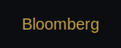
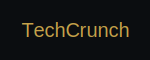

Press Coverage



TechCrunch
2 hours agoAI Startup Raises $50M Series B
Revolutionary AI platform secures major funding following strategic PR campaign by Prestige PR.
Read MoreForbes
4 hours agoHealthcare Brand's Transparency Wins
How crisis management turned a potential disaster into a trust-building opportunity.
Read MoreBloomberg
6 hours agoFuture of Digital PR
Industry leaders discuss the evolution of public relations in the digital age.
Read More